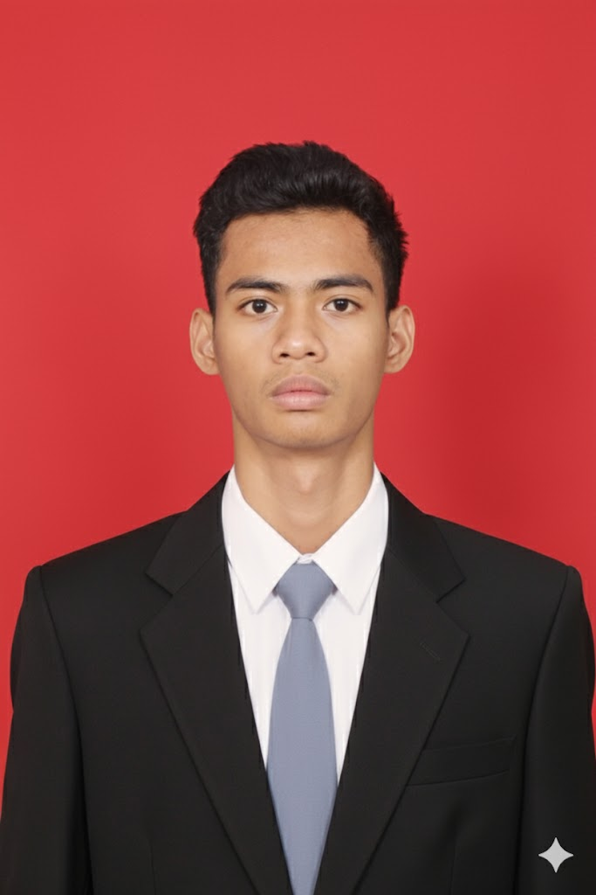

About Me

I am a robotics and IoT enthusiast with a passion for creating innovative solutions that bridge the physical and digital worlds. With a strong foundation in both hardware and software, I enjoy tackling complex challenges and building systems from the ground up. My goal is to leverage technology to solve real-world problems and drive progress in the field of intelligent automation.
My Journey
Juli 2022 — Oktober 2023
Robotic Engineer
CV Solusi Arya Prima
- Engineered and deployed custom robotic solutions, translating unique client specifications into functional, high-performance systems.
- Executed comprehensive troubleshooting and root-cause analysis for complex mechanical and electronic issues, ensuring high reliability and system uptime.
- Managed the complete project lifecycle from initial client consultation and design prototyping to final implementation and post-deployment support.
2018 — 2020
Madrasah Aliyah Negeri Purbalingga
Ilmu Pengetahuan Alam
2015 — 2017
SMP Istiqomah Sambas Purbalingga
2008 — 2014
MI Istiqomah Sambas Purbalingga
My Skills
Electronics
Basic understanding of circuits, soldering, and components.
Communication
Excellent verbal and written communication skills.
Problem Solving
Analytical and logical approach to solving problems.
Software Office
Proficient in Microsoft Office Suite (Word, Excel, PowerPoint).
Software Design PCB
Experience with PCB design software (Eagle, Proteus).
Jaringan Internet
Understanding of basic networking concepts and protocols.
Microcontroller
Familiarity with microcontroller programming (Arduino, ESP32).
My Projects
IoT-Based Room Temperature Monitor
Designed and built an IoT device using an ESP32 microcontroller and a DHT11 sensor to monitor room temperature and humidity in real-time. The device sends data to a simple web server, allowing for remote monitoring from any device on the local network. This project involved microcontroller programming, basic circuit design, and an introduction to IoT concepts.
Custom Arduino LED Controller PCB
Designed a custom Printed Circuit Board (PCB) using proteus for an Arduino-based lighting controller. The board controls multiple RGB LED strips and includes physical buttons for changing patterns and colors. This project involved schematic capture, PCB layout, and soldering surface-mount and through-hole components.
Smart Wi-Fi Garage Door Opener
Developed a smart, web-controlled garage door opener using an ESP8266. The system interfaces with a standard garage door motor via a relay, allowing for remote operation through a simple web interface hosted on the ESP itself. This project demonstrates skills in IoT, embedded systems, web server implementation, and safely interfacing with existing electronics.